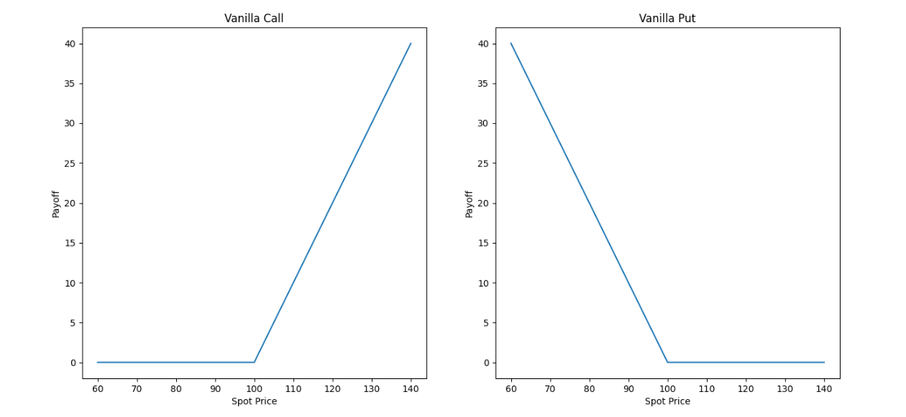
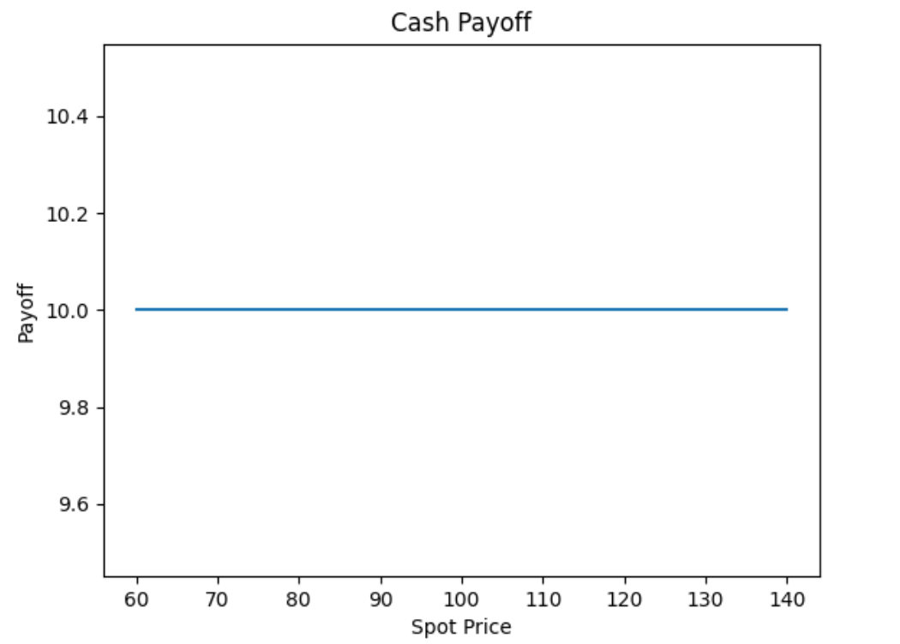
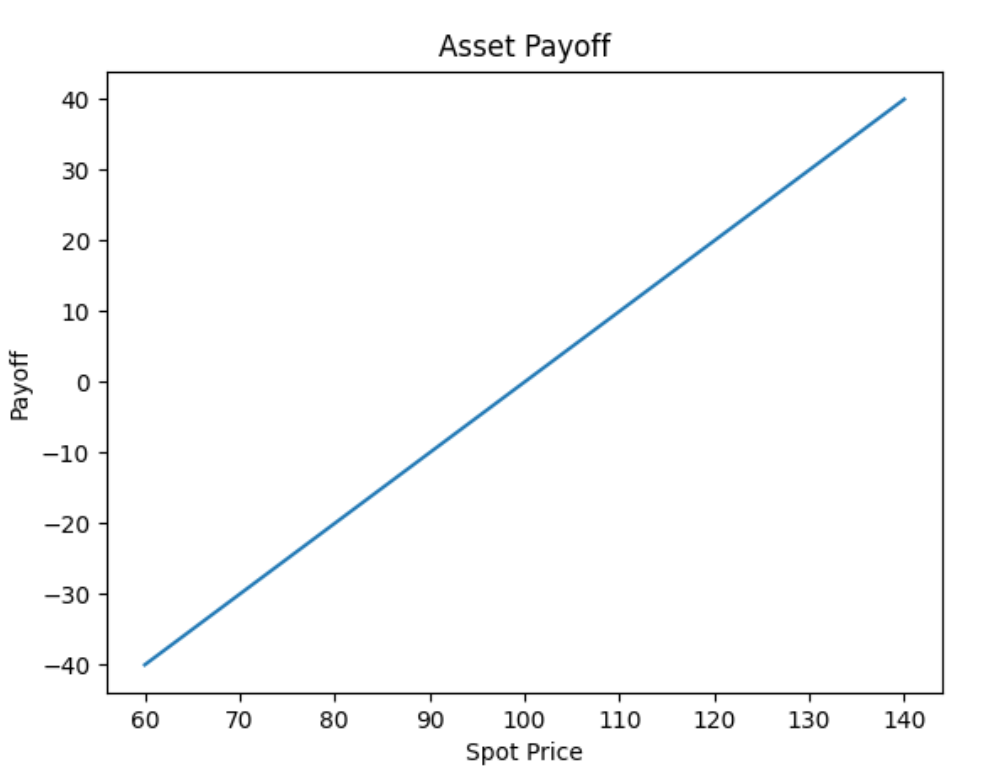
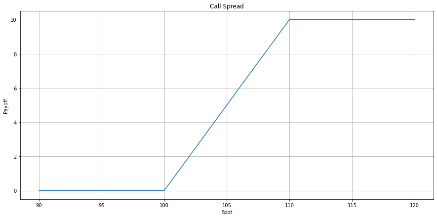
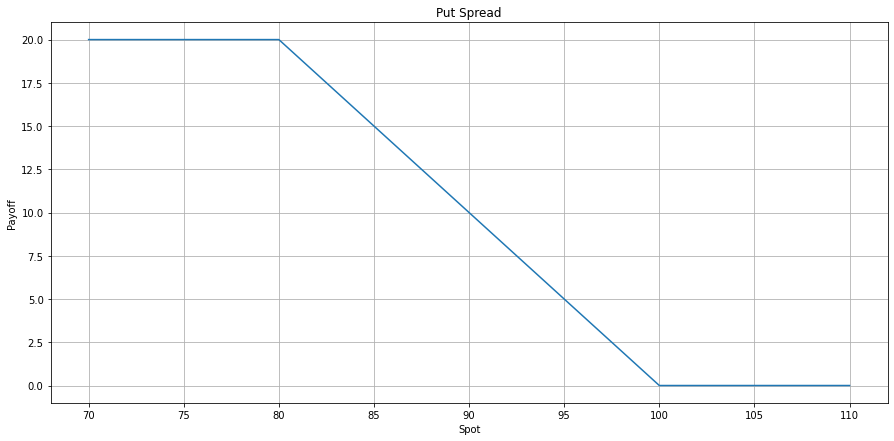

Payoff¶
- class Payoff¶
Payoff 被定义为描述期权买方和卖方所获得的净利润/亏损。
Payoff 的继类¶
Vanilla¶
- class Vanilla(const double strike, const OptionType o_type, const double participation_rate)¶
Vanilla 表示欧式香草期权乘一个参与率。
\[vanilla_c = \text{participation} * \max(\text{spot} - \text{strike}, 0).\]
\[vanilla_p = \text{participation} * \max(\text{strike} - \text{product}, 0).\]

{kind=link}
- Parameters:
- strike: double
- 行权价格。
- option_type: OptionType
- 期权类型, CALL or PUT.
- participation_rate: double
- 该赔付的参与率。
Cash¶
- class Cash(const double cash_amount)¶
Payoff是一笔固定的现金。
{kind=link}
- Parameters:
- cash_amount: double
- 一笔固定的现金。
Asset¶
- class Asset(const double strike, double participation_rate)¶
Asset 是在给定执行价格和参与率下购买资产。
{kind=link}
- Parameters:
- strike: float
- 行权价格。
- participation_rate: float
- 该Payoff的参与率。
{kind=link}
{kind=link}
与 payoff 相关的操作¶
payoff 支持与 payoff 的 +, -¶
#include "qlib/payoff.h"
int main()
{
auto payoff1 = Vanilla(100, OptionType::CALL, 1.0);
auto payoff2 = Cash(10);
//相加
payoff1 + payoff2;
//相减
payoff1 - payoff2;
}
payoff 支持与 double 类型的数字相乘¶
#include "qlib/payoff.h"
int main()
{
auto payoff = Vanilla(100, OptionType::CALL, 1.0);
// double * payoff
2.2 * payoff;
// payoff * double
payoff * 2.2;
}
payoff 支持与自身相减¶
#include "qlib/payoff.h"
int main()
{
auto payoff = Vanilla(100, OptionType::CALL, 1.0);
-payoff;
}
Example 1¶
一个Call Spread由一个低行权价的香草看涨减去一个高行权价的香草看涨组成，Call Spread构建示例如下：
{kind=link}
#include "qlib/payoff.h"
int main()
{
auto call1 = Vanilla(100, OptionType::CALL, 1.0);
auto call2 = Vanilla(110, OptionType::CALL, 1.0);
auto call_spread = call1 - call2;
std::vector<double> spots(31);
std::iota(spots.begin(), spots.end(), 90);
for (double spot:spots)
{
std::cout<< call_spread(spot)<<std::endl;
}
}
Example 2¶
一个Put Spread由一个高行权价的香草看跌减去一个低行权价的香草看跌组成，Put Spread构建示例如下：
{kind=link}
#include "qlib/payoff.h"
int main()
{
auto put1 = Vanilla(80, OptionType::PUT, 1.0);
auto put2 = Vanilla(100, OptionType::PUT, 1.0);
auto put_spread = put2 - put1;
std::vector<double> spots(41);
std::iota(spots.begin(), spots.end(), 70);
for (double spot:spots)
{
std::cout<< put_spread(spot) <<std::endl;
}
}